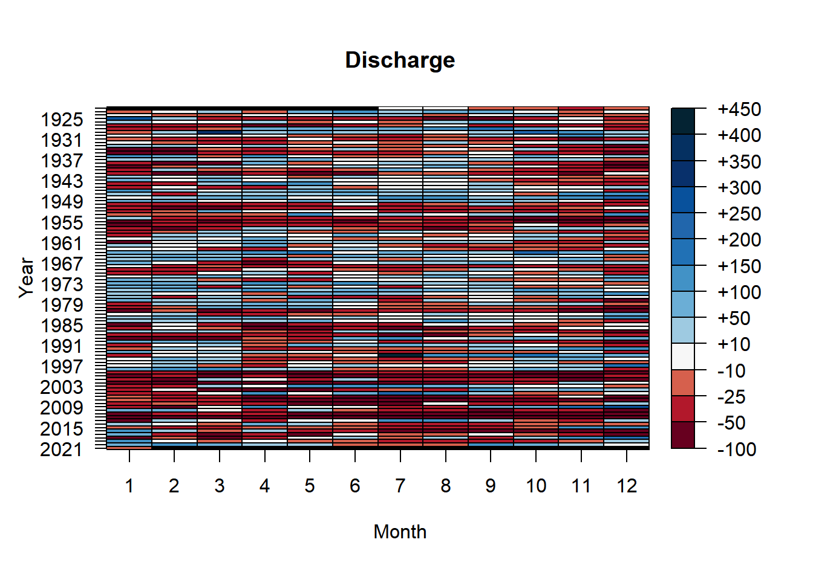
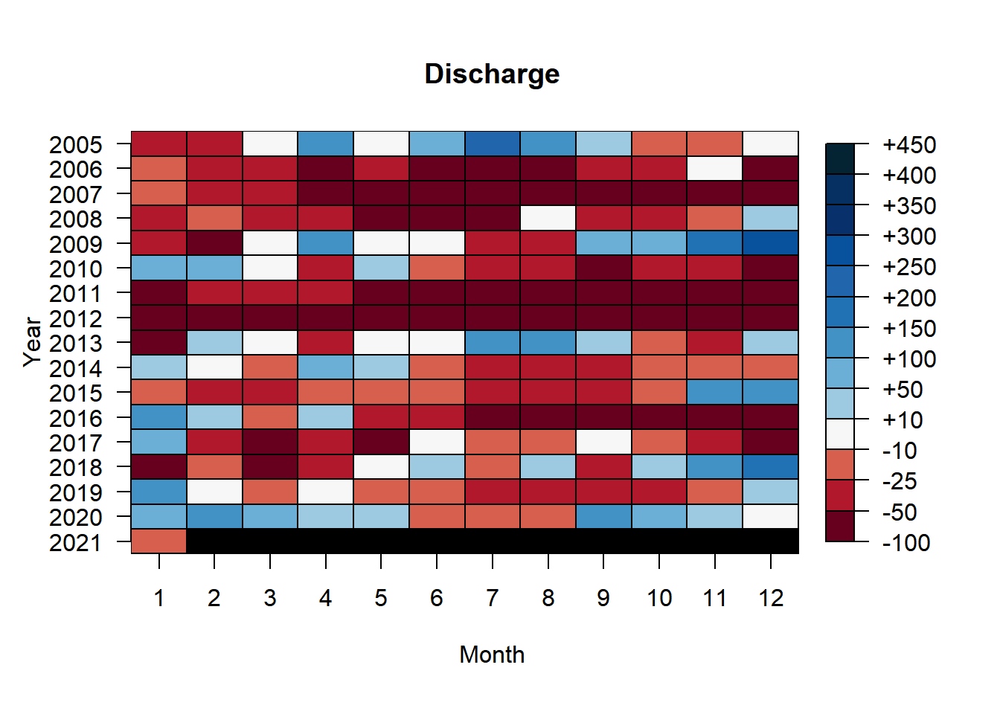
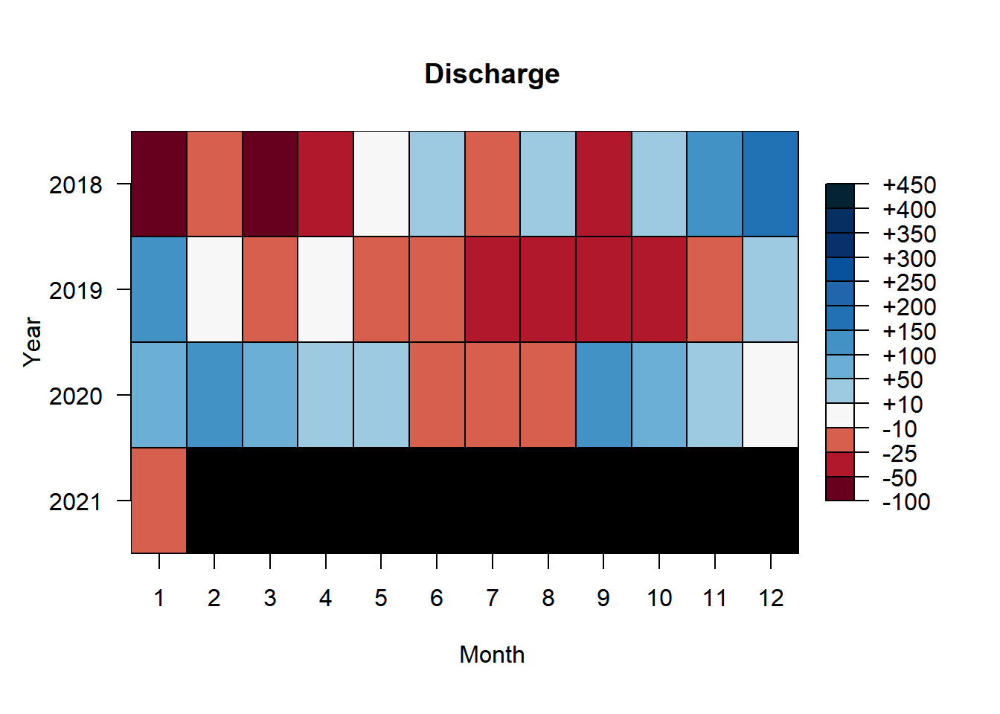

Chapter 5 River Discharge Heat Map
Suwannee River discharge is known to influence salinity in Suwannee Sound (Orlando et al. 1993) and lags between Suwannee River discharge and oyster counts have been observed (Moore et al. 2020). River discharge is essentially a second “treatment” in this restoration project (after the rebuilding of the reef) because it is the freshwater from the Suwannee River that Lone Cabbage Reef is thought to detain thus possibly promoting lower salinity. River discharge patterns in the Suwanee River basin may be changing over decadal scales due to changing climate, as is hypothesized for large rivers in the Gulf of Mexico (Neupane et al. 2019). For the period of record for the USGS Wilcox gauge (02323500) which begins in October 1930, we created a “heat map” that demonstrates for each month and year the deviation in river discharge (as a percentage) from the period of record average (Figures 23-25).
 Figure 1. Heat map of Suwannee River deviations in mean daily discharge by year and month from USGS Wilcox gauge (02322500) for the period of record measured as deviation from the average by month for period of record. White color for a given month and year is a month when river discharge is similar (with +/- 10%) to the period of record average, while blue to dark blue colors represent increasing discharge levels deviating as a percentage from the long-term average. Red to dark red colors conversely equal increasingly low discharge levels (below the period of record average). The black colors are months when data are not available.
 Figure 2. Heat map of Suwannee River deviations in mean daily discharge by year and month from USGS Wilcox gauge (02323500) for 2005-2021 measured as deviation from the average by month for period of record. White color for a given month and year is a month when river discharge is similar (with +/- 10%) to the period of record average, while blue to dark blue colors represent increasing discharge levels deviating as a percentage from the long-term average. Red to dark red colors conversely equal increasingly low discharge levels (below the period of record average). The black colors are months when data are not available.
 Figure 3. Heat map of Suwannee River deviations in mean daily discharge by year and month from USGS Wilcox gauge (02323500) for 2018-2021 measured as deviation from the average by month for period of record. White color for a given month and year is a month when river discharge is similar (with +/- 10%) to the period of record average, while blue to dark blue colors represent increasing discharge levels deviating as a percentage from the long-term average. Red to dark red colors conversely equal increasingly low discharge levels (below the period of record average). The black colors are months when data are not available.